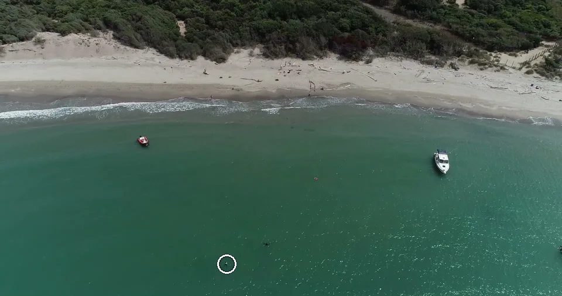
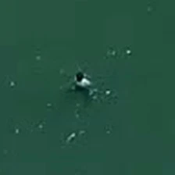
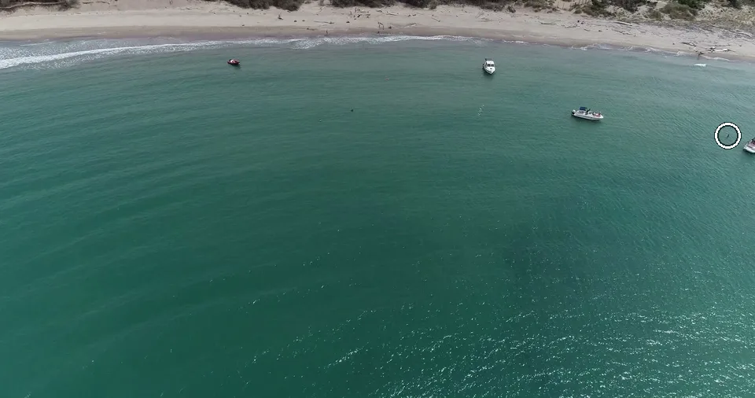
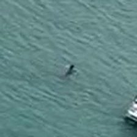

Recorded MOBDrone benchmark · 0:00–0:24
Two queues, two different swimmers
In the first 24 seconds of flight 0014, each queue reached one swimmer the other missed.
The first five handoffs on flight 0014
Each queue reached 2 in-water tracks and 3 labeled tracks in total, with 2 empty handoffs across five cards. Both reached track 6 in water. Track 17 was graded on shore and both queues reached it.
Who did Ember bring forward?Track 0 · Ember only
Track 0 · Detector + Ember
Card 4 used the 0:02 frame and opened at 3.097 s on the simulated clock.
Inspect Ember slot 4 in the audit


Who did it leave out?Track 1 · Detector only
Track 1 · Detector alone
Card 5 used the 0:16 frame and opened at 17.097 s on the simulated clock.
Inspect detector slot 5 in the audit


Recorded window DJI_0804_0014_50m_2. The full frames are resized and marked. The crops are enlarged. MOBDrone, Cafarelli et al. · CC BY 4.0
Simulated crew exchange · Separate recorded flight
Send a reply back to the operator
Open the flagged crop at 0:36 on MOBDrone flight DJI_0915_0007_40. Ask for another cue, then place your pin on the full frame. You can leave the sighting unresolved after a correction. The operator view shows what the crew sent.
Extract the ZIP and open 0014.html to review both cases and try the crew exchange offline.